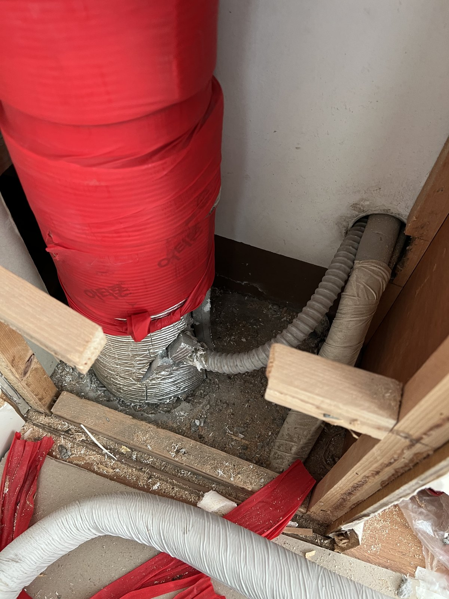
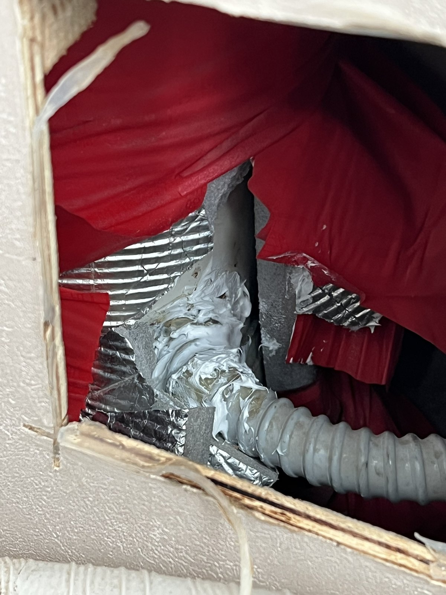
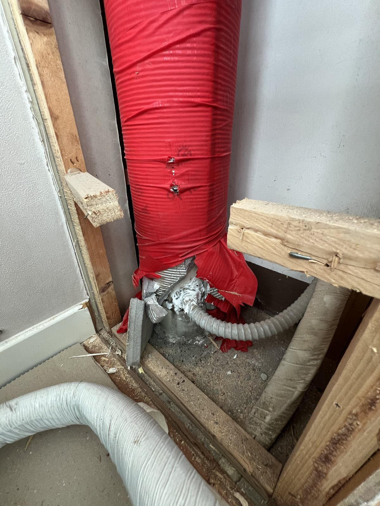
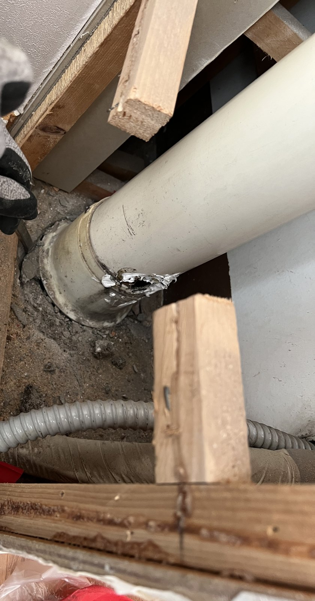
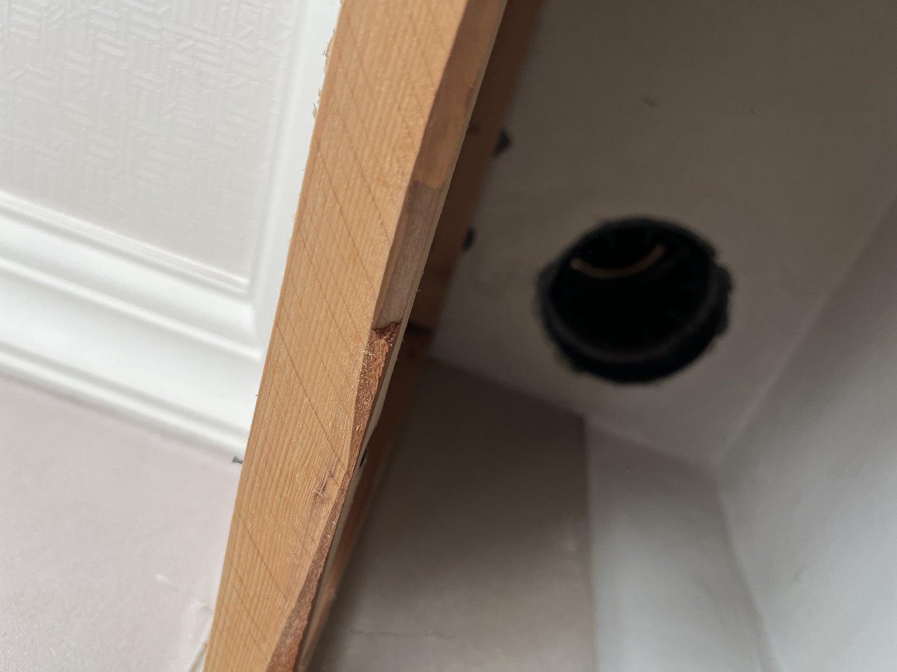
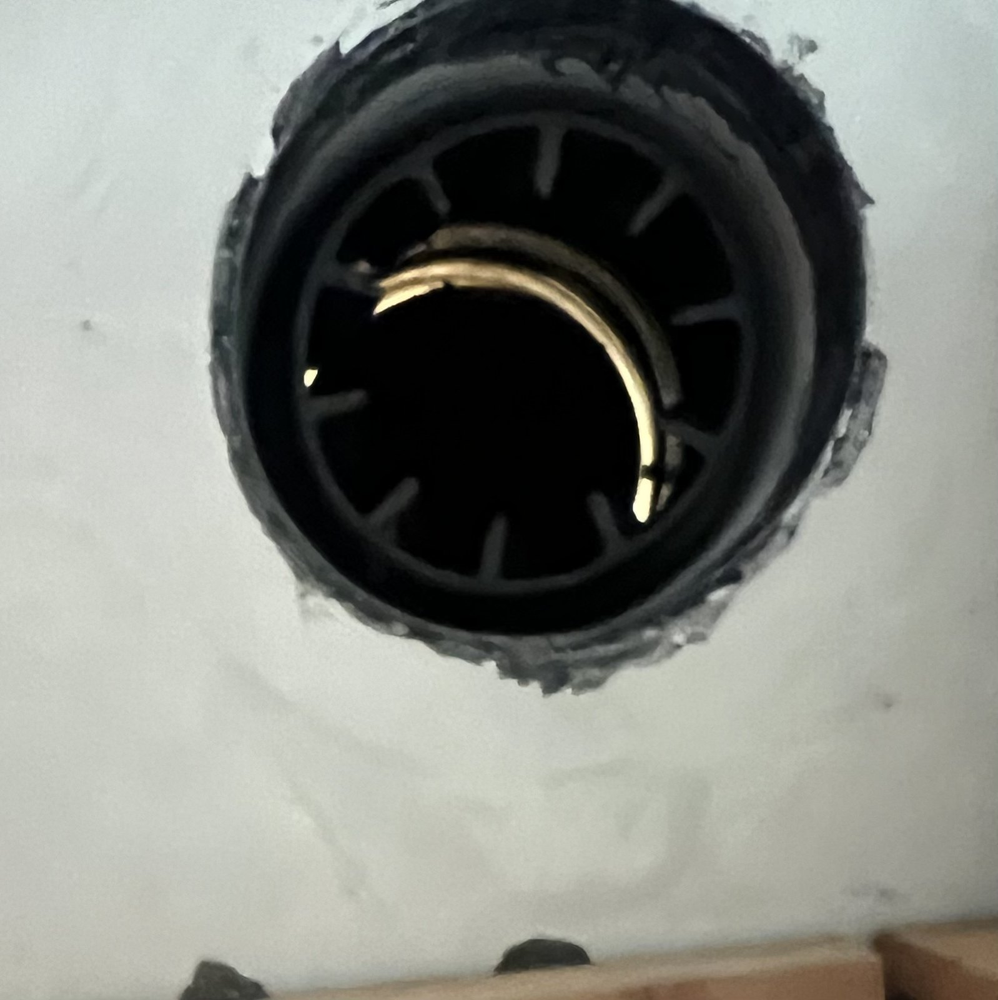
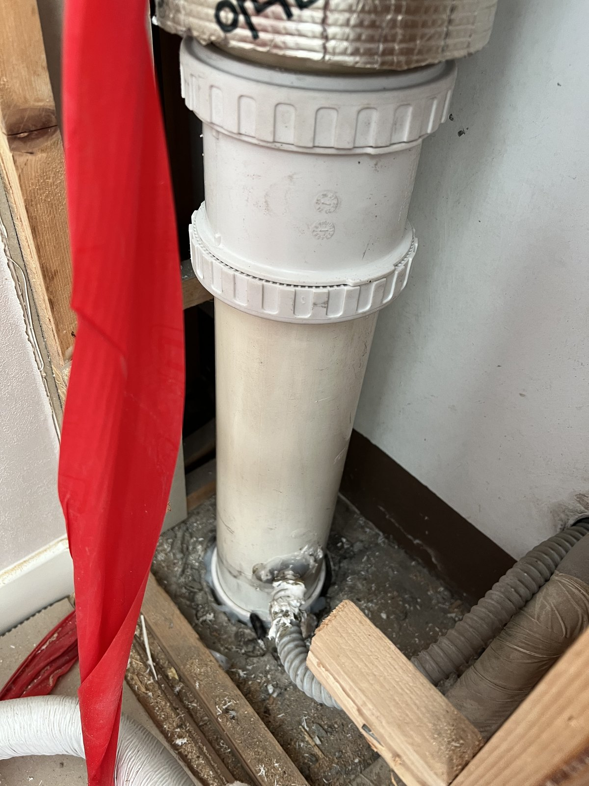
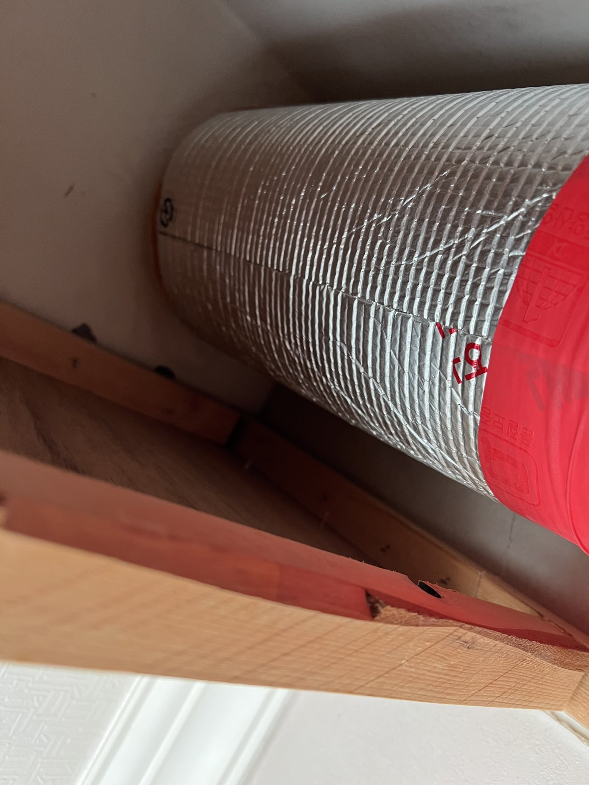

대전 열매마을 벽 모서리 우수관 박스 작업｜기존 관을 빼고 새 관을 이어 보온재 마감

작업 핵심
현장 작업 한눈에 보기
- 현장
- 대전 열매마을 · 벽 모서리 우수관 박스
- 문제
- 박스 안 우수관
관을 감싼 보온재 - 작업
- 박스 열기·보온재 걷어 내기
기존 관 분리·새 관과 이음 부속 연결·보온재 다시 감기 - 결과
- 새 관과 보온재 마감 사진 확인
박스 덮개 복구·통수시험 수치·소요시간은 미기재
대전 열매마을 벽 모서리 우수관 박스 작업입니다. 박스를 열어 보온재를 걷어 내고, 기존 관을 빼낸 뒤 새 관과 이음 부속으로 다시 이은 다음 보온재를 다시 감쌌습니다. 실제 사진 8장으로 소개합니다.
1. 박스 윗부분 열기
대전 열매마을 작업입니다. 2026년 11월 6일 오후 사진을 순서대로 소개합니다.
벽 모서리의 우수관 박스 윗부분을 열자, 빨간 겉싸개와 은박 보온재로 감싼 배관 이음부가 보였습니다.

2. 박스 아래쪽
박스 아래쪽도 열었습니다. 빨간 보온재로 감싼 세로 우수관이 바닥까지 내려와 있습니다.

3. 보온재를 걷어 낸 바닥 쪽
바닥 쪽 보온재를 걷어 내자 기존 관과 바닥 연결부가 드러났습니다.

4. 기존 관을 빼낸 윗부분
기존 관을 빼낸 뒤 박스 윗부분을 올려다본 모습입니다. 천장 쪽에 검은 연결구만 남아 있습니다.

5. 천장 쪽 연결구
천장 쪽 연결구를 가까이 본 모습입니다.

6. 새 관과 이음 부속
새 흰색 관을 세우고 이음 부속으로 위아래를 이었습니다.

7. 보온재 다시 감기
새 관에 은박 보온재를 감고, 그 위를 빨간 겉싸개로 다시 쌌습니다.

8. 마무리
바닥 쪽까지 보온재를 다시 감싼 모습입니다. 2번 사진과 비교해 보세요.
9. 확인한 범위와 상담 안내
이번 기록은 사진으로 확인되는 공정 범위입니다. 박스 덮개를 다시 닫은 사진과 통수시험 수치, 총 작업시간은 자료가 없어 적지 않았습니다.
벽 모서리 배관 박스 둘레에 물 얼룩이 보이거나 바닥이 젖어 있으면, 박스 위아래와 얼룩 위치를 각각 찍어 상담해 주세요.